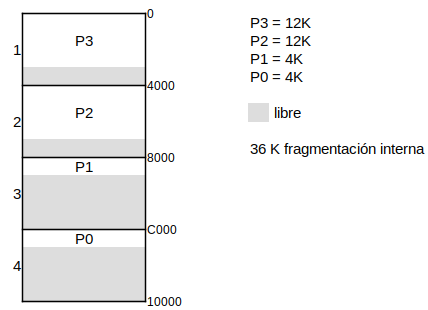
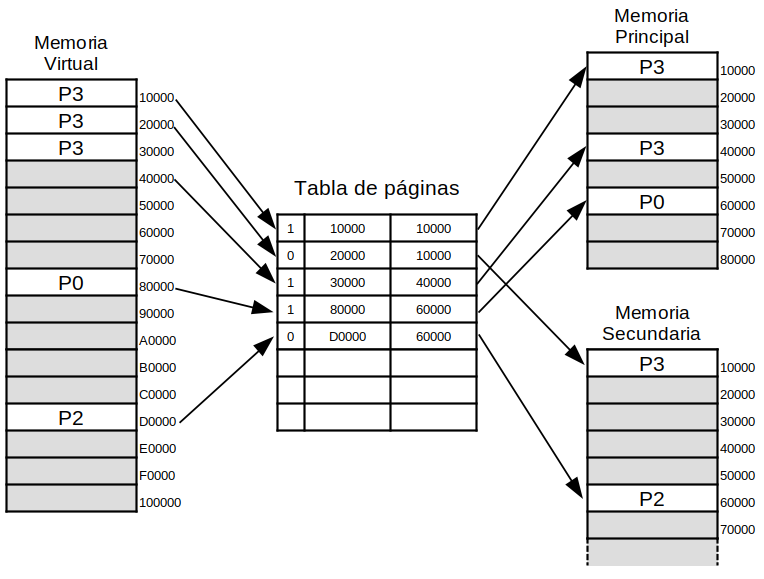
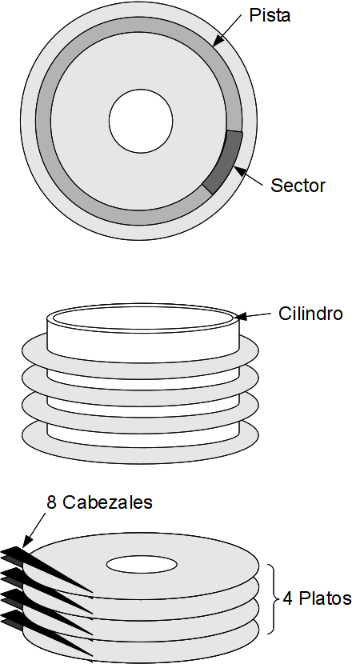
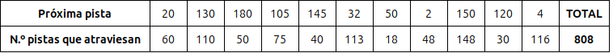
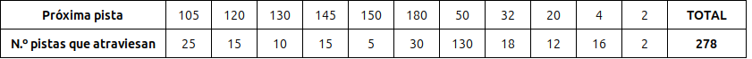
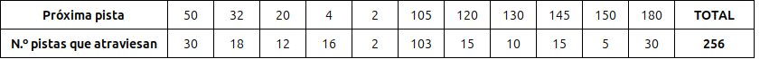
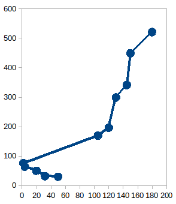
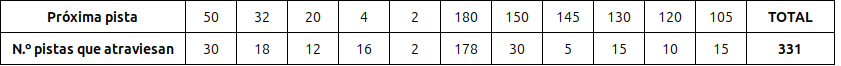

Gestión de memoria#
Jerarquía de memoria#
La jerarquía de memoria es la organización piramidal de la memoria en niveles, el objetivo es acercarse el rendimiento de una memoria de gran velocidad al coste de una memoria de baja velocidad.

La memoria principal#
La memoria principal de se compone por el cache y la memoria RAM
En un principio se adoptaron dos forma de hacer las particiones fijas o dinámicas, las fijas se creaban cuando arrancaba el ordenador, en el caso de que quisiéramos correr un proceso más grade que el tamaño de las particiones tendríamos que reiniciar el ordenador, y como podemos ver en la siguiente figura las particiones fijas favorecen la fragmentación interna, la cual es debida a los procesos de tamaño más pequeño que las particiones.
Imaginemos una memoria de 64K con 4 particiones de 16K = 2⁴2¹⁰=(HEX)=4000
{kind=link}
Con las particiones dinámicas se consiguió evitar la fragmentación interna, sin embargo aparece la fragmentación externa, haciendo necesaria la compactación de la memoria.

En 1961, Fotheringham desarrolla una nueva técnica de gestión llamada memoria virtual, la idea es que el proceso que queremos correr es mayor que la memoria disponibles para ese proceso, lo que sucede entonces es que el SO guarda aquellas partes del programa de uso corriente en la memoria principal, el resto le deja en el disco.
Es lógico pensar que no todas las partes del programa van a ser utilizadas al mismo tiempo, de hecho es muy probable que se utilicen instrucciones cercanas a las se están utilizando, fenómeno llamado localidad.
{kind=link}
La transformación del número de página virtual al número de página física se realiza mediante la tabla de páginas.
Uno de los sistemas más comunes de memoria virtual es la denominada demanda de página. Los procesos se inician sin ninguna página en memoria; cuando se intenta ejecutar la primera instrucción se produce un fallo de página (por no encontrarse la página en memoria principal), que provoca que el sistema operativo traiga la página de la memoria virtual a la memoria principal después de un cierto tiempo el proceso tiene la mayoría de las páginas que necesita, y la ejecución se realizará con un número relativamente pequeño de fallos de página. Cuando se produce un fallo de página, la página se carga desde el disco duro a la memoria. La página que entra en memoria, se escribe directamente encima de la que hay en memoria. Aquí es donde debe actuar el algoritmo, FIFO: primero en entrar, primero en salir , LRU: la menos usada recientemente (Least Recently Used), etc …
Planificación del disco#
El tiempo de lectura/escritura de un sector del disco depende del tiempo de busqueda, retardo rotacional y tiempo de transferencia. De todos ellos, el único que se puede optimizar desde el programa gestor del disco es el primero ya que los otros dos dependen de las características propias del disco y bus de transmisión.
{kind=link}
Cuando un proceso requiere una operación de E/S del disco, envía la correspondiente llamada al SO (como todos los procesos) especificando las siguientes informaciones;
Tipo de operación (si se trata de una entrada o de una salida)
Dirección en el disco: Unidad, cilindro, superficie, bloque
Dirección en memoria
Cantidad de información que se va a transferir
Así, será preciso poner en una cola todas las peticiones que vayan llegando, así habrá que elegir una de las que están pendientes de ser servidas.
Veamos el siguiente ejemplo
En una cola ordenada en la que se han almacenado las siguientes peticiones de pistas: 20,130,180,105,145,32,50,2,150,120,4
Inicialmente la posición inicial de la cabeza de lectura/escritura está en la pista 80.
FIFO (First in, first out)
Las solicitudes de acceso se almacenan en una cola, de manera que la primera petición que llega es la primera que se sirve.

SSTF (shortest service time first) Primero la más cercana.
Consiste en atender la petición que requiere el menor movimiento de la cabeza de lectura/escritura desde su posición actual. Como la cabeza se mueve en las dos direcciones, hay situaciones en las que puede haber empate, en dicho caso se atenderá cualquiera de las dos

Planificación SCAN (rastreo) Evita el posible bloqueo de SSTF.
La estrategia es ir recorriendo todas las pistas en una dirección. Cuando ya no hay mas pistas en esa dirección, empieza a atender en el sentido contrario. También se le conoce como el algoritmo del ascensor, por su analogía, llega hasta arriba, parando donde haga falta, y después baja atendiendo las nuevas paradas.
 Planificación C-SCAN Restringe el rastreo en un único sentido.
De esta forma evita el problema anterior de SCAN. Siguiendo con la analogía del ascensor, equivale a que el ascensor solo hiciera paradas cuando suba, de forma que cuando esté arriba baje hasta abajo sin realizar paradas, y desde abajo, vuelva a subir realizando las nuevas paradas.
